RDM in systems neuroscience:Challenges and best practices |
Adina Wagner mas.to/@adswa mas.to/@adswa
|
|
|
|
Institute of Neuroscience and Medicine (INM-7),
Research Center Jülich Institute for Experimental Psychology, HHU Düsseldorf |
DOI; 10.5281/zenodo.10122803
Perks of being a neuroscientist...
A growing culture of
open data

Perks of being a neuroscientist...
A large and growing amount of open source software
|
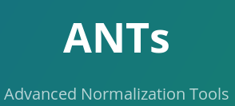
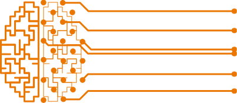
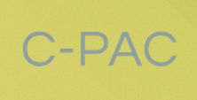
... and many more! |
Perks of being a neuroscientist...
Many readily available, often free, sometimes FOSS, services for data storage and collaboration

Perks of being a neuroscientist...
Work on fascinating questions with fascinating data|
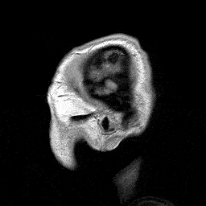 /wiki/File:Parasagittal_MRI_of_human_head_in _patient_with_benign_familial_macrocephaly_prior _to_brain_injury_(ANIMATED).gif |
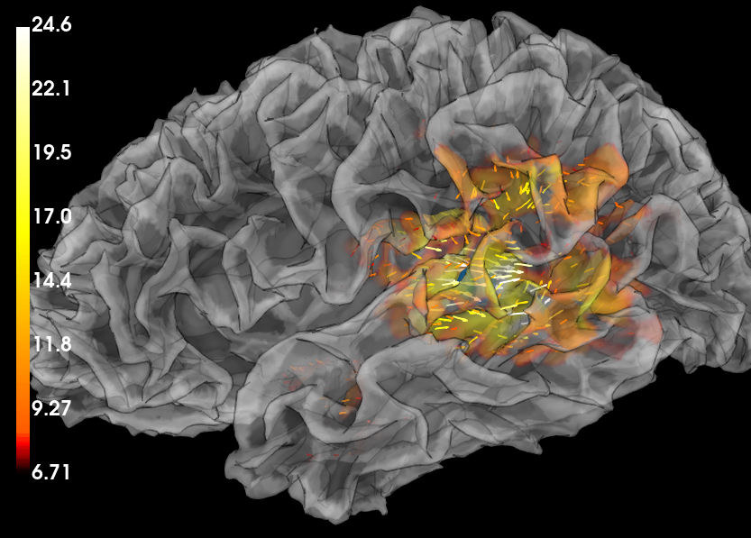 |
|
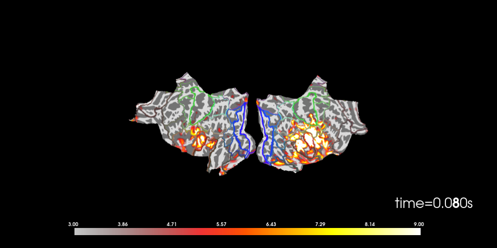 |
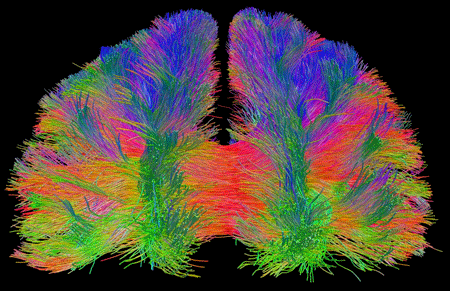 |
The good news, the bad news
| Interesting data | ... that's subject to GDPR, making storage, analysis, and sharing difficult |
| Data analysis | Reproducibility is threatened by intransparent, multi-stepped analyses¹ & unstable results across software versions². Dataset sizes exceed computational capabilities (e.g., HCP project: ~100TB, 1.2k people). |
| Data sharing | Heterogenous distribution and updating, many scientists lack data management skills |
| Collaboration | Few interoperable workflows across institutes, rather: isolated solutions |
- Domain-agnostic data management tool (command-line + graphical user interface), built on top of Git & Git-annex
- 10+ year open source project (100+ contributors), available for all major OS
- Born from rethinking data:
- Just like code, data is not static.
- Just like code, data is subject to collaboration. Stream-lined workflows for sharing and collaborating should be possible, mirroring those in software development.
- Provenance of data is essential for reproducible, trustworthy, and FAIR science
- Flexibility and interoperability with existing tools is the key to sustainability and ease of use
- Domain-agnostic command-line tool (+ graphical user interface), built on top of Git & Git-annex
- 10+ year open source project (100+ contributors), available for all major OS
- Major features:
- Version-controlling arbitrarily large content
- Version control data & software alongside to code!
- Transport mechanisms for sharing, updating & obtaining data
- Consume & collaborate on data (analyses) like software
- (Computationally) reproducible data analysis
- Track and share provenance of all digital objects
- (... and much more)
Tracking & Sharing - Where is the Privacy?
- Datasets have an optional annex for (large or sensitive) data.
- Rather than file content, identity (hash) and location information is tracked. Users have fine-grained control over transport and access; encryption is possible.
- Datasets can separate data access from meta data access

Fine-grained file transport
- Cloned datasets are lean, because file content is retrieved on demand:
$ datalad clone \
https://github.com/datalad-datasets/human-connectome-project-openaccess.git
$ cd human-connectome-project-openaccess && du -sh
5.0M .
$ datalad get HCP1200/102513/T1w/T1w_acpc_dc.nii.gz
get(ok): HCP1200/102513/T1w/T1w_acpc_dc.nii.gz (file) [from datalad...]
$ datalad drop HCP1200/102513/T1w/T1w_acpc_dc.nii.gz
drop(ok)

Big data
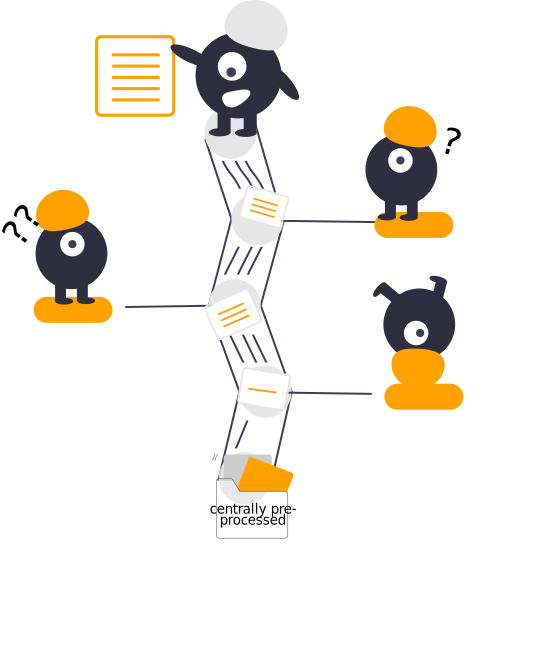
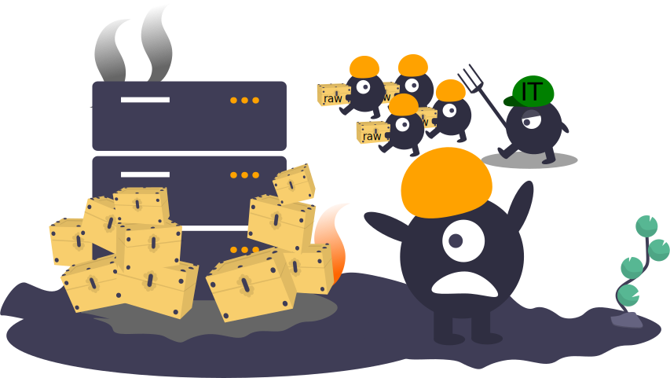
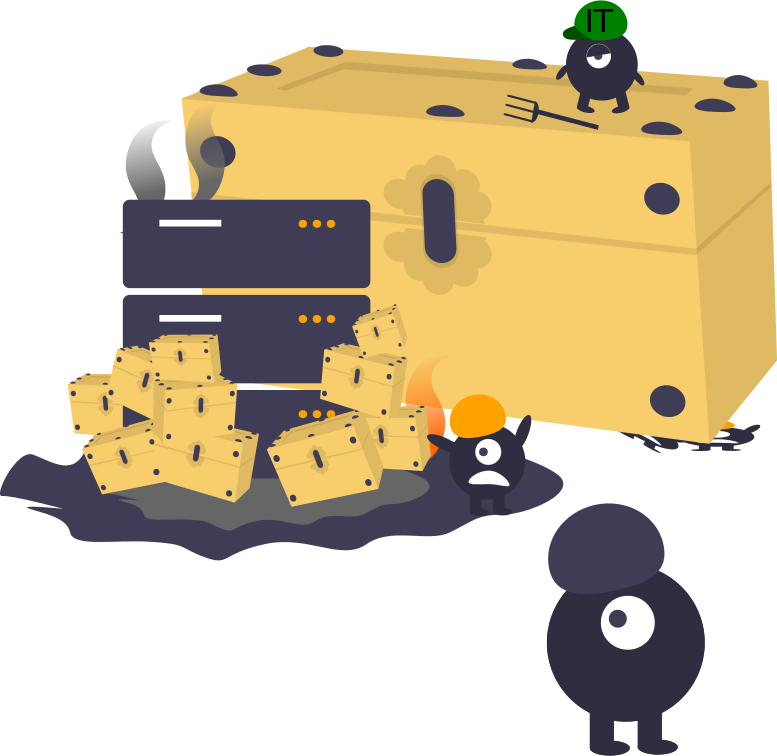
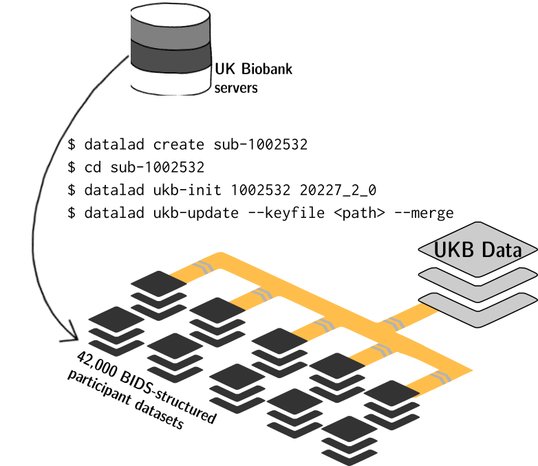
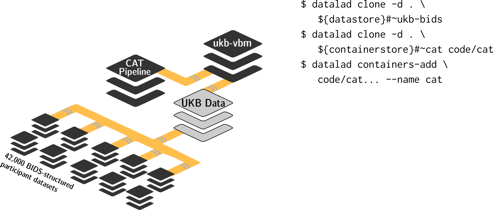
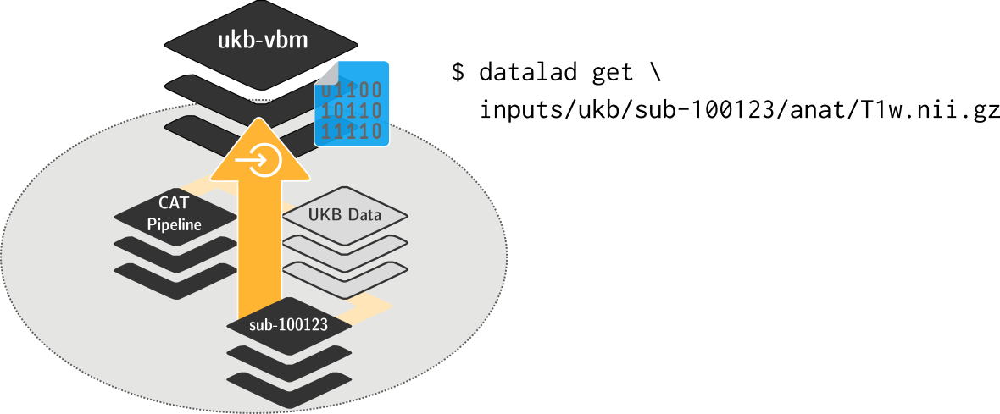
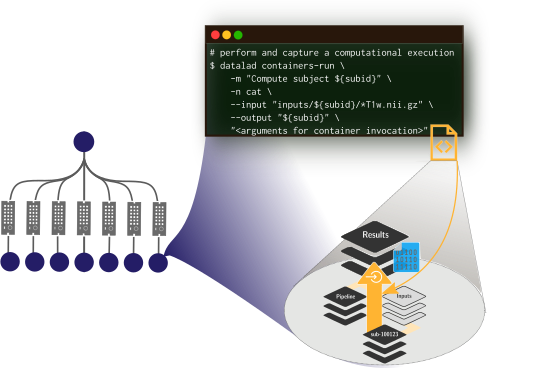
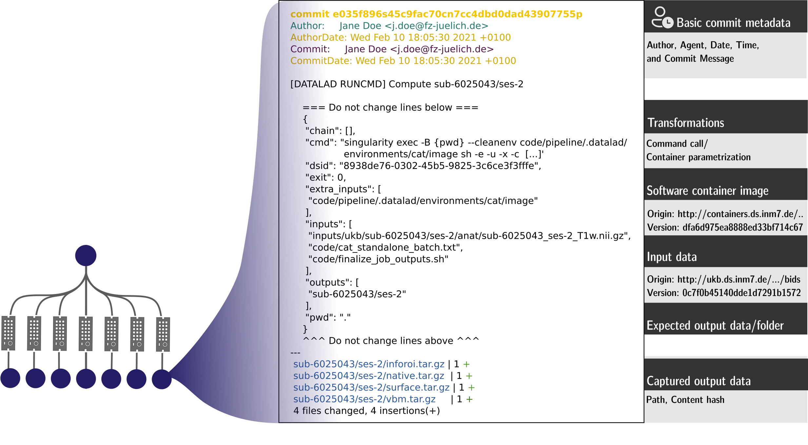
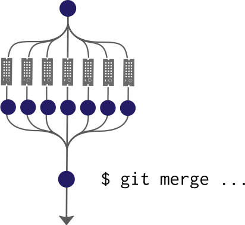
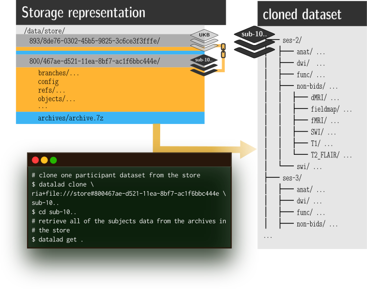
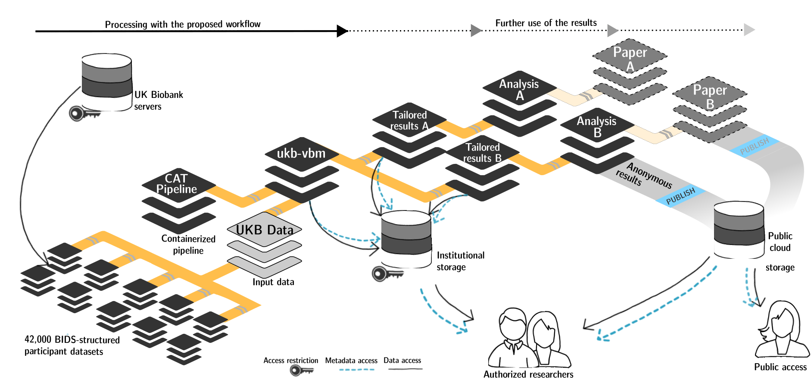
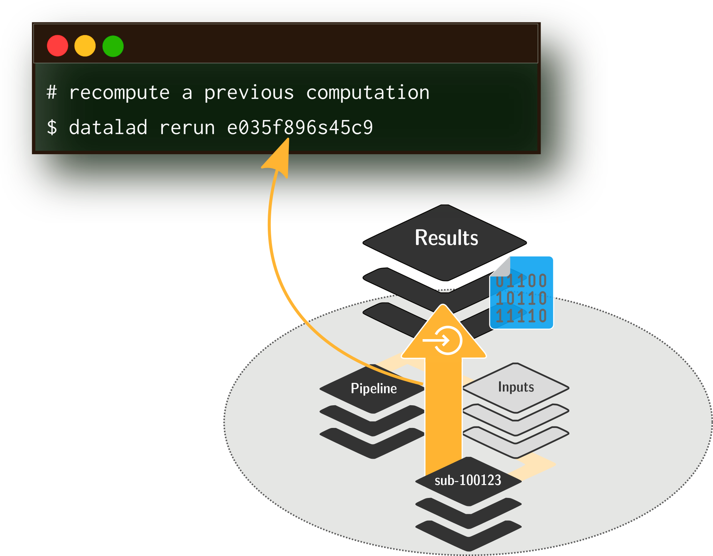
Where can I find out more?
- Reach out to to the DataLad team via
- Matrix (free, decentralized communication app, no app needed). We run a weekly Zoom office hour (Tuesday, 4pm Berlin time) from this room as well.
- the development repository on GitHub (github.com/datalad/datalad)
- Reach out to the user community with
- A question on neurostars.org
with a
dataladtag - Find more user tutorials or workshop recordings
- On DataLad's YouTube channel (www.youtube.com/channel/datalad)
- In the DataLad Handbook (handbook.datalad.org)
- In the DataLad RDM course (psychoinformatics-de.github.io/rdm-course)
- In the Official API documentation (docs.datalad.org)
{Open,Transparent,Reproducible} science
- Treat data like software: obtain, version, share, and update data
- Simplified data management, disk-space aware storage & computing
- Transparent and reproducible science: link code, data, software, and execution in a human- and machine-readable way
- Collaborate: Generic workflows, interoperabality with established tools & services
distribits.live
- First conference on technologies for distributed data management
- 2 day conference plus single-day Hackathon
- @ Haus der Universität Düsseldorf
Acknowledgements
Thanks!Questions? |
Funders


Collaborators
|